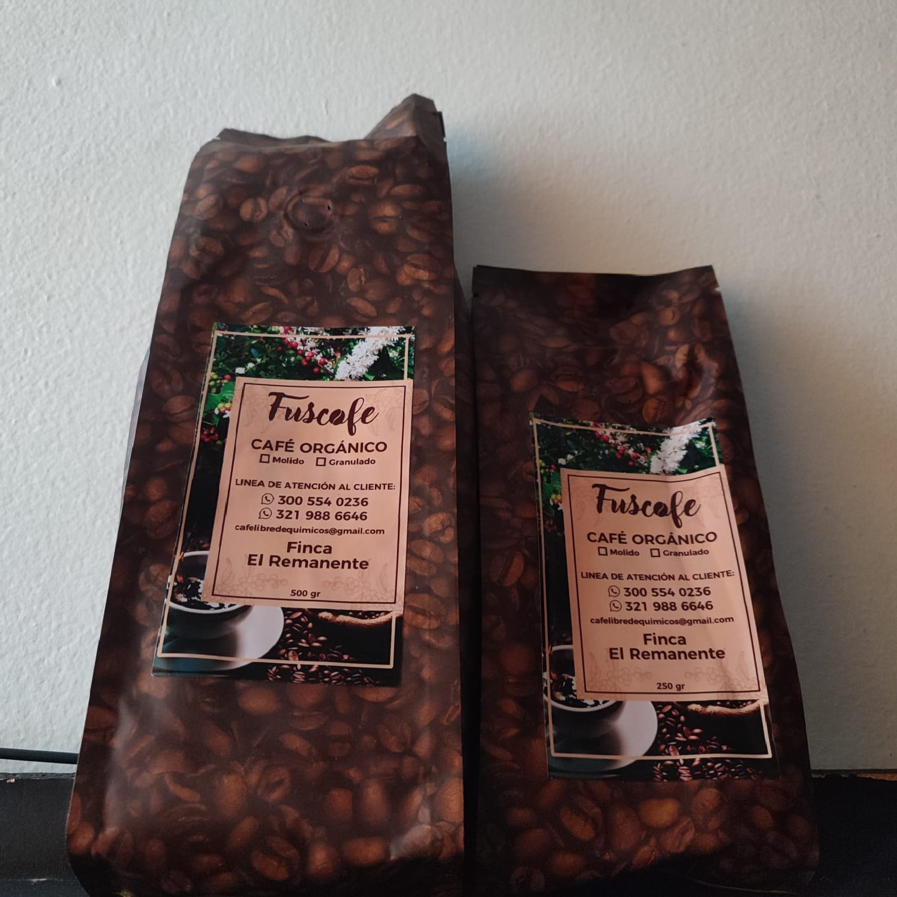
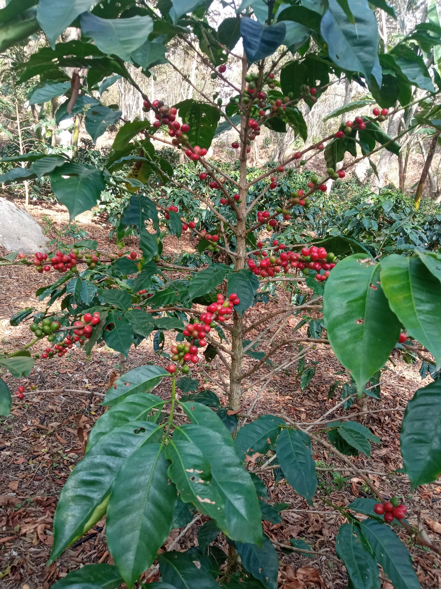
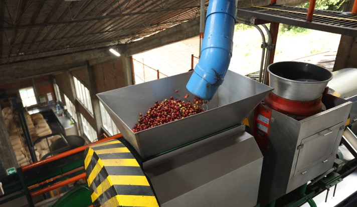
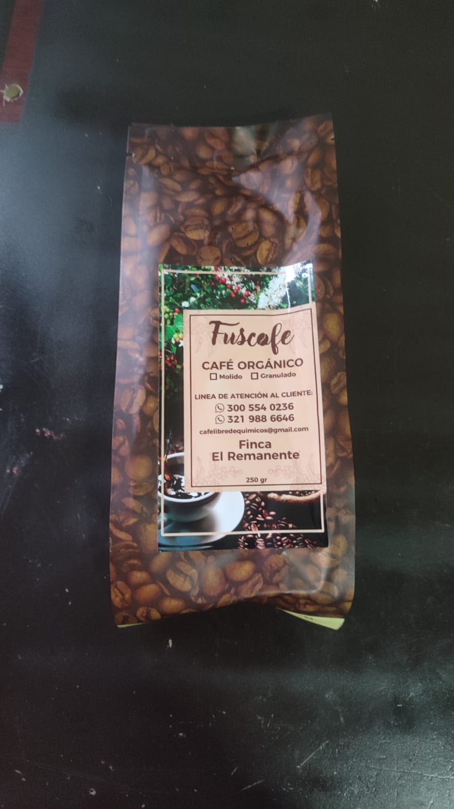
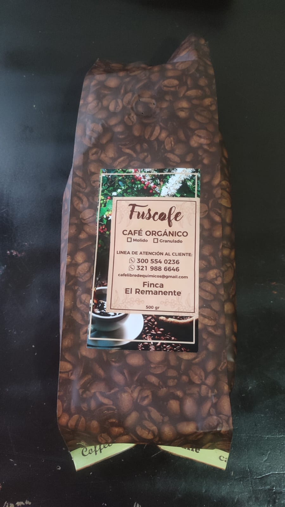
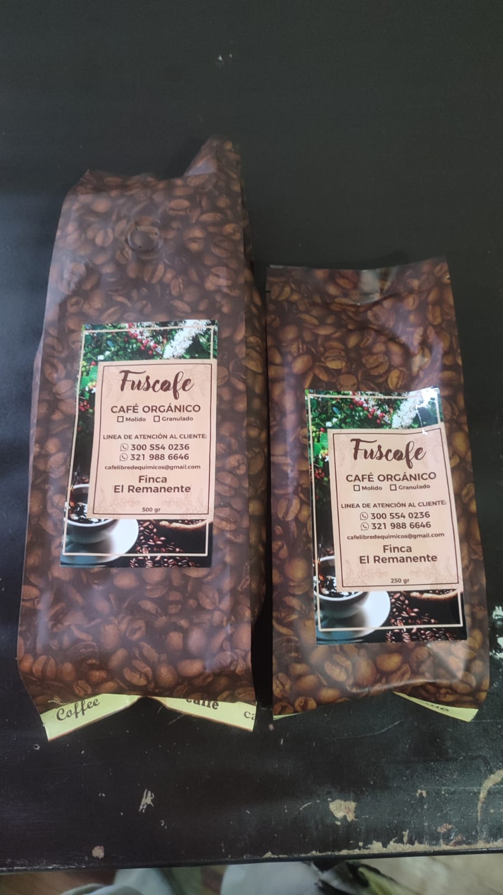

El sabor puro de la naturaleza en cada grano, desde la finca El Remanente, Fusagasugá
Descubre el Café Orgánico Más Puro
Sobre Nosotros

En Café Orgánico El Remanente, ubicada en la finca El Remanente en Fusagasugá, Cundinamarca, nos apasiona cultivar y procesar café de la más alta calidad. Nuestro compromiso con la agricultura orgánica significa que cada grano es cultivado sin pesticidas ni químicos sintéticos, respetando el equilibrio natural de la tierra y preservando el medio ambiente. Fundada por familias locales con décadas de experiencia, nuestra finca se encuentra en un entorno prístino, rodeado de montañas verdes y ríos cristalinos, lo que nos permite ofrecer un café que no solo es delicioso, sino también sostenible.
Creemos en la transparencia y la calidad. Nuestros granos rojos son cosechados a mano en su punto óptimo de madurez, asegurando un sabor rico, con notas de chocolate, nuez y un toque de acidez natural. Ven a visitarnos y siente la calidez de nuestra comunidad cafetera, donde cada taza cuenta una historia de dedicación y amor por la tierra. ¡Únete a nosotros en esta aventura orgánica y descubre por qué nuestro café es el favorito de los amantes del buen gusto!
Nuestro Proceso Artesanal
Seguimos un método tradicional y meticuloso, desde la cosecha hasta el empaque, para garantizar que cada grano conserve su esencia orgánica y su sabor excepcional. Este proceso no solo resalta la pureza del café, sino que también apoya prácticas sostenibles que benefician a la comunidad y al planeta.

Cosecha: Recogemos manualmente los granos de café rojo maduros, seleccionando solo los mejores para asegurar frescura y calidad orgánica.

Molienda: Utilizamos molinos tradicionales para moler los granos frescos, liberando aromas naturales sin alterar su composición orgánica.
Deseresado: Eliminamos la pulpa y la cáscara con cuidado, obteniendo granos limpios listos para el siguiente paso, manteniendo su integridad orgánica.
Procesamiento y Empaque: Secamos y tostamos a baja temperatura para realzar sabores, luego empacamos al vacío en presentaciones ecológicas, listas para llevar el café orgánico a tu hogar.
Este enfoque artesanal no solo produce un café superior, sino que también minimiza el impacto ambiental, promoviendo la biodiversidad y el bienestar de nuestros agricultores. ¡Prueba la diferencia en cada sorbo!
Productos y Precios
Ofrecemos nuestro café orgánico empacado en presentaciones de 250g o 500g, o ambos juntos en un paquete especial. Cada producto es una invitación a experimentar la riqueza de El Remanente. Precios en pesos colombianos (COP), con envíos gratuitos en Fusagasugá para compras superiores a $50,000.

Café Orgánico 250g: $15,000
Presentación compacta de café molido orgánico, ideal para probar o para uso diario. Notas de vainilla y caramelo, tostado lentamente para un sabor gourmet.

Café Orgánico 500g: $25,000
Presentación más grande de café molido orgánico, perfecta para familias. Sabor equilibrado con toques de chocolate y nuez, cultivado y procesado orgánicamente.

Paquete Orgánico (250g + 500g): $35,000
El paquete completo con ambas presentaciones: 250g y 500g de café molido orgánico. Ideal para regalar o para tener variedad en casa. ¡Ahorra y disfruta más!
Para pedidos personalizados o mayoristas, contáctanos para ofertas especiales. Todos nuestros productos son libres de gluten y aditivos, enfocados en la salud y el bienestar.
Contacto
Ubicación: Finca El Remanente, Fusagasugá, Cundinamarca, Colombia. ¡Ven a nuestra finca y conoce el proceso en vivo!
Teléfono: +57 300 123 4567
Email: info@cafetrinidad.com
Horarios: Lunes a Sábado: 8:00 AM - 6:00 PM. Domingos: Citas previas para tours y degustaciones.
Ofrecemos degustaciones gratuitas, tours guiados por la finca y asesoría personalizada. ¡Contáctanos hoy y comienza tu viaje hacia el mejor café orgánico!
Deseresado: Eliminamos la pulpa y la cáscara con cuidado, obteniendo granos limpios listos para el siguiente paso, manteniendo su integridad orgánica.